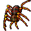
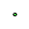
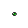
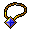
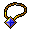

Laracna
Esse boss Se encontra na quest da "Boots of Hast" o canhinho você encontra lá.
A "Laracna" tem 130 de vida e tem defesa 🧊20 🌾99 🔥10 💀20 ⚡20 💡20 e XP de 135000.
O loot.


 

 

 Home
Home